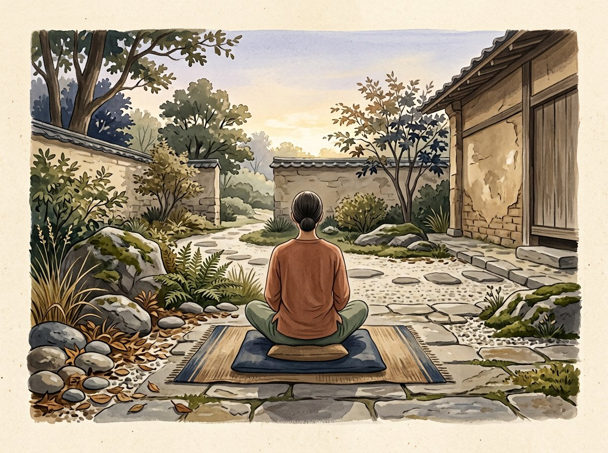

ATTENTION · CONCENTRATION · COMPASSION
Buddhist meditation: core practices and traditions
Buddhist meditation is not one method but a range of ways to train attention, explore experience and cultivate wholesome qualities. Names and instructions vary across traditions; an overview cannot replace guidance in a specific practice.

DIFFERENT AIMS
Concentration and exploring experience
Shamatha generally refers to cultivating calm and stable attention. Vipashyana is associated with examining experience and developing insight, though explanations differ among schools. The terms are used in different ways, so it helps to read them within a particular tradition rather than treat them as one universal modern system.
WORD AND IMAGE
Mantra, metta and visualization
Repeating a mantra can support attention or serve as prayer. Metta is a practice of loving-kindness that cultivates wishes for well-being for oneself and others. Visualization appears in several Buddhist lineages, including some Vajrayana practices, and may call for prior explanation and guidance.
MOVEMENT AS A SUPPORT
A prayer wheel offers another rhythm
For some practitioners, turning a mani wheel offers a bodily rhythm for recitation and kind intention. It is neither a universal meditation technique nor a substitute for structured instruction, but a distinct prayer gesture within a particular tradition.